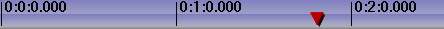

| [ << ] | [ >> ] | [Top] | [Contents] | [Index] | [ ? ] |
This window contains the timeline and the entry point for all menu driven operations. The timeline consists of a vertical stack of tracks with a horizontal representation of time. This defines the output of rendering operations and what is saved when you save files. To the left of the timeline is the patchbay which contains options affecting each track.
The timeline
Under the Window menu, you will find options that affect the main windows. Default positions repositions all the windows to a 4 screen editing configuration. On dual headed displays, the Default positions operation fills only one monitor with windows.
The program window contains many features for navigation and displays the timeline as it is structured in memory: tracks stacked vertically and extending across time horizontally. The horizontal scroll bar allows you to scan across time. The vertical scroll bar allows you to scan across tracks.

A video track
Video tracks represent the duration of your videos and clips, just as if you placed real photographic film stock end-to-end on a table. The individual images you see on the track are samples of what is located at that particular instant on the timeline.

An audio track
Audio tracks represent your sound media as an audio waveform. Following the film analogy, it would be as if you "viewed" magnetic tape horizontally on your table.
You can adjust the horizontal and vertical magnification of the tracks and the
magnification of the audio "waveform" display using the zoom panel bar controls.
Every track on the timeline has a set of attributes on the left, called the
patch bay. It is used to control the behavior of the tracks.
The most important attribute is arm track.
Track Navigation involves both selecting a specific audio or video track and moving to a certain time in the track. The program window contains many features for navigation and displays the timeline as it is structured in memory.
The vertical scroll bar allows you to scan across tracks. For vertical scrolling you can use also the mouse wheel.
The horizontal scroll bar allows you to scan across time. For horizontal scrolling you can use also the mouse wheel with the CTRL key.
In addition to the graphical tools, you may also use the keyboard to navigate. As a general rule, keyboard navigation is faster than navigation with a mouse. Use PAGE UP and PAGE DOWN to scroll up and down the tracks.
You will often need to scroll beyond the end of the timeline, but the scrollbars will not let you do it. Instead, use the RIGHT arrow to scroll past the end of timeline.
Use the HOME and END keys to instantly go to the beginning or end of the timeline. In I-beam mode, hold down SHIFT while pressing HOME or END in order to select the region of the timeline between the insertion point and the key pressed.
Below the timeline, you will find the zoom panel. The zoom panel contains values for sample zoom (duration visible on the timeline), amplitude (audio waveform scale), track zoom (height of tracks in the timeline), and curve zoom(automation range). In addition to the scrollbars, these zooms are the main tools for positioning the timeline.

Changing the sample zoom causes the unit of time displayed in the timeline to change size. It
allows you to view your media all the way from individual frames to the
entire length of your project. The higher the setting, the more frames you can see per
screen. The sample zoom value is not an absolute reference for the unit of time since
it refers to the duration visible on the timeline and thus changes also as you modify
the length of the program window horizontally.
Use the UP and DOWN arrows to change the sample zoom by a power of two.
If your mouse has a wheel and it works in X11, mouse over the tumblers and use the
wheel to zoom in and out.
The amplitude only affects audio. It determines how large the waveform appears.
CTRL-UP and CTRL-DOWN cause the amplitude zoom to change.
The track zoom affects all tracks. It determines the height of each track.
If you change the track zoom, the amplitude zoom compensates so that the audio waveforms
look proportional.
CTRL-PGUP and CTRL-PGDOWN cause the track zoom to change.
The curve zoom affects the curves in all the tracks of the same type. It
determines the value range for curves. First select the automation type (audio
fade, video fade, zoom, X,Y) then use the left tumblers for the minimum value and
the right tumblers for the maximum value or manually enter the values in the
text box. Normally you will use -40.0 to 6.0 for audio fade and 0.0 to 100.0 for
video fade. See section The patchbay.
The tumblers changes curve amplitude, but the only way to curve offset
is to use the fit curves button
 .
.
ALT-UP and ALT-DOWN cause the curve amplitude to change.
Each Track has a popup menu. To activate the track popup menu, RIGHT-click on the track. The popup menu affects the track whether the track is armed on the patch bay or not. The Track Menu contains a number of options:
The insertion point is the flashing hairline mark that vertically spans the timeline in the program window. Analogous to the cursor on your word processor, the insertion point marks the place on the timeline where the next activity will begin. It's the point where a paste operation takes place. When rendering, it defines the beginning of the region of the timeline to be rendered. It is also the starting point of all playback operations.
The insertion point on the main window,
represented as a vertical hair-line at the 00:00.500 point
Normally, the insertion point is moved by clicking inside the main timebar. Any region of the timebar not obscured by labels and in or out points is a hotspot for repositioning the insertion point. In cut and paste editing mode only, the insertion point can be moved also by clicking in the timeline itself.

The main timebar
When moving the insertion point the position is either aligned to frames or aligned to samples. When editing video, you will want to align to frames. When editing audio you will want to align to samples. Select your preference by using Settings->Align cursor on frames.
Editing modes are two different methods of operation that affect the insertion point and the editing on the timeline.
They are:
The editing mode is determined by selecting the arrow or the i-beam in the buttonbar. Alternatively you can use e as a keyboard shortcut to toggle between modes.

The editing mode buttons
If the arrow is highlighted, it enables drag and drop mode.
In drag and drop mode, clicking in the timeline does not reposition the insertion point.
Double-clicking in the timeline selects the entire edit the mouse pointer is over.
Dragging in the timeline repositions the edit the mouse pointer is over. This is useful for reordering audio playlists, sorting movie scenes, moving effects around.
To cut and paste in drag and drop mode you need to set
in/out points to define an affected region. See section The in/out points.
See section Drag and drop editing.
If the i-beam is highlighted it enables cut and paste mode.
In cut and paste mode, clicking in the timeline repositions the insertion point.
Double-clicking in the timeline selects the entire edit the cursor is over.
Dragging in the timeline highlights a region. The highlighted region becomes
the region affected by cut and paste operations and the playback range during
the next playback operation.
SHIFT-clicking in the timeline extends the highlighted region.

Tracks with highlighted area, shown inside the green outline
When highlighting a region, the start and end points are either aligned to
frames or aligned to samples. When editing video, you will want to align to
frames. When editing audio you will want to align to samples. Select your
preference by using settings->align cursor on frames.
See section Cut and paste editing.
Note: Cinelerra CV revisions 943 and 944 (SVN checkouts from 19 to 21 October 2006) had no editing modes buttons. "Copy and paste" and "Drag and drop" editing modes were merged into one, shift key being differentiation between them. This is the case of the Gentoo ebuild media-video/cinelerra-cvs-20061020.
In both editing modes, you can set one in point and one out point. The in/out points define the affected region. In drag and drop mode, they are the only way to define an affected region. In both cut and paste mode and drag and drop mode, the highlighted area overrides the in/out points. If a highlighted area and in/out points are set, the highlighted area is affected by editing operations and the in/out points are ignored. If no region is highlighted, the in/out points are used. To avoid confusion, it is better to use either highlighting or in/out points but not both simultaneously.
Normally, in/out points do not affect the playback region. The in/out points determine the playback region only if you hold down CTRL while issuing a playback command.
To set in/out points, go to the timebar and position the insertion point
somewhere. Select the  in point button.
Move the insertion point to a position after the in point and click the
in point button.
Move the insertion point to a position after the in point and click the
 out point button.
Instead of using the button bar, you can use the [ and ] keys to
toggle in/out points.
out point button.
Instead of using the button bar, you can use the [ and ] keys to
toggle in/out points.

Timebar with in/out points set.
If you set the insertion point somewhere else while in/out points already exist, when you click the in/out buttons the existing points will be repositioned.
If you click on in/out points while a region is highlighted, the insertion point will be ignored and in/out points will be set at the beginning and at the end of the highlighted area.
If you select either the in point or the out point, the insertion point will jump to that location. After selecting an in point, if you click the in point button the in point will be deleted. After selecting an out point, if you click the out point button the out point will be deleted.
Tip: To quickly get rid of in/out points, without caring about where they are or if they are set or not, just double click on [ and ] buttons. The first click will set a new point or reposition an old one at the insertion point; the second click will delete it. Obviously this trick does not work if the in point or the out point is already set at insertion point.
SHIFT-clicking on an in/out point highlights the region between the insertion point and that in/out point. If a region is already highlighted, it extends the highlighted region up to that in/out point.
The insertion point and the in/out points allow you to define an affected region, but they do not let you jump to exact points on the timeline very easily. For this purpose there are labels.
Labels are an easy way to set exact locations on the timeline that you want to jump
to. When you position the insertion point somewhere and click the
 label button, a new label appears on the
timeline.
label button, a new label appears on the
timeline.

Timebar with a label on it
No matter what the zoom settings are, clicking on the label highlights it and positions the insertion point exactly where you set the label. Hitting the l key has the same effect as the label button.
Labels can reposition the insertion point when they are selected but they can
also be traversed with the  label
traversal buttons. When a label is out of view, the label traversal buttons
reposition the timeline so the label is visible. There are keyboard shortcuts
for label traversal, too.
label
traversal buttons. When a label is out of view, the label traversal buttons
reposition the timeline so the label is visible. There are keyboard shortcuts
for label traversal, too.
CTRL-LEFT repositions the insertion point on the previous label.
CTRL-RIGHT repositions the insertion point on the next label.
With label traversal you can quickly seek back and forth on the timeline.
The Label tab of the resources window lists the timestamp of every label. You can edit the label list and add a title for every item using the popup menu. To open the Label info dialog right click on the label icon in the Resources window or directly on the label symbol on the timebar.
With labels you can also select regions.
SHIFT-CTRL-LEFT highlights the region between the insertion point and the previous label.
SHIFT-CTRL-RIGHT highlights the region between the insertion point and the next label.
Double-clicking on the timebar between two labels highlights the region between the labels.
SHIFT-clicking on a label highlights the region between that label and the insertion point. If a region is already highlighted, it extends the highlighted region up to that label.
If you hit the label button when a region is highlighted, labels are created at each end of the highlighted region. However, if one end already has a label, then the existing label is deleted.
Hitting the label button again when a label is selected deletes it. Manually hitting the label button or l key over and over again to delete a series of labels can get tedious. To delete a set of labels, first highlight a region. Second, use the Edit->Clear labels function. If in/out points exist, the labels between the in/out points are cleared and the highlighted region is ignored.
In Cut and Paste editing mode only, by enabling Edit labels in the
settings menu, or by disabling the  Lock labels from moving button on the program toolbar labels will be cut,
copied or pasted along with the selected region of the first armed track.
Lock labels from moving button on the program toolbar labels will be cut,
copied or pasted along with the selected region of the first armed track.
Similarly, if a selected area of a resource is spliced from the viewer to the
timeline in a position before labels, these labels will be pushed to the right
on the timebar for the length of the selected area.
To prevent labels from moving on the timebar, just disable the
Edit labels option or enable the
Lock labels from moving button.
In Drag and Drop editing mode labels will be always locked to the timebar,
even with the Edit labels option enabled.
| [ << ] | [ >> ] | [Top] | [Contents] | [Index] | [ ? ] |
This document was generated on February, 18 2016 using texi2html 1.76.